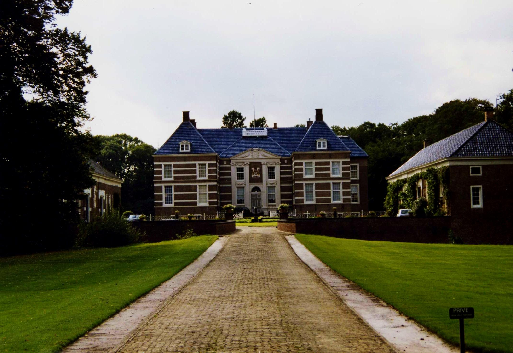
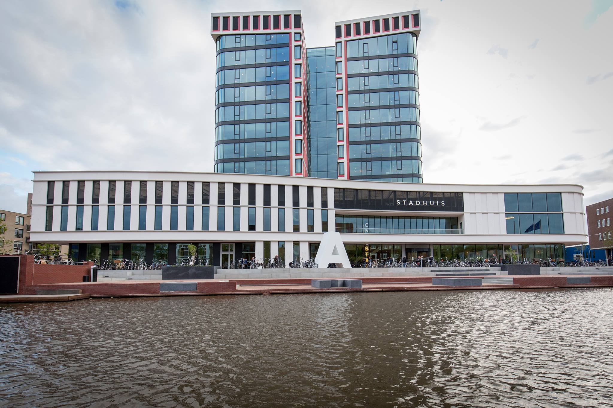

 Almelo bestaat al sinds de Middeleeuwen. In het centrum van Almelo vind u een kasteel met gracht, omgeven door een prachtig park. Dit "Huis Almelo" bestaat al sinds de 12e eeuw en wordt nog steeds bewoond door de familie Van Rechteren Limpurg.
 Het stadhuis van Almelo is gebouwd in 2015, ter vervanging van het oude stadhuis, dat verbouwd is tot een wooncomplex. Het is een modern gebouw, dat gelegen is aan een gracht, die is verbonden met het kanaal.